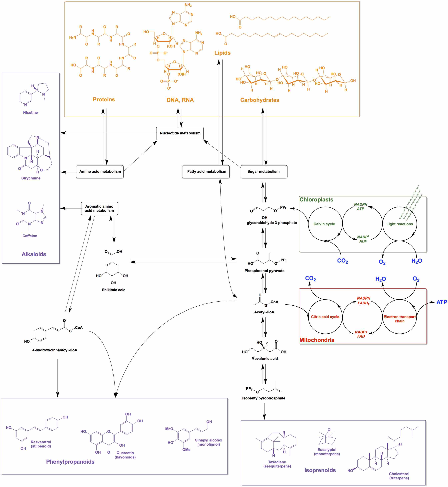
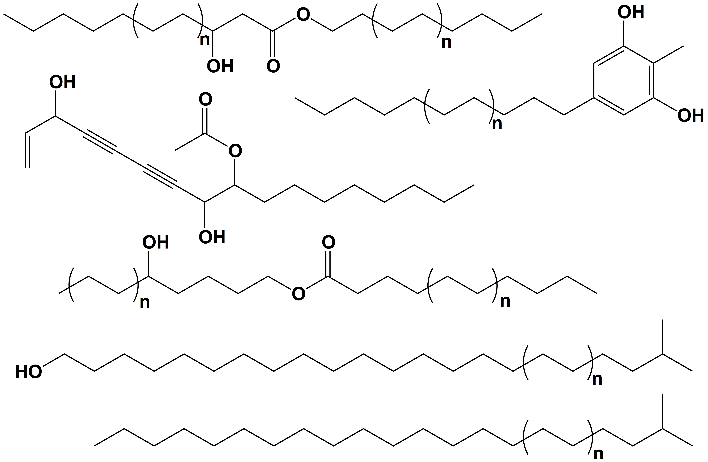
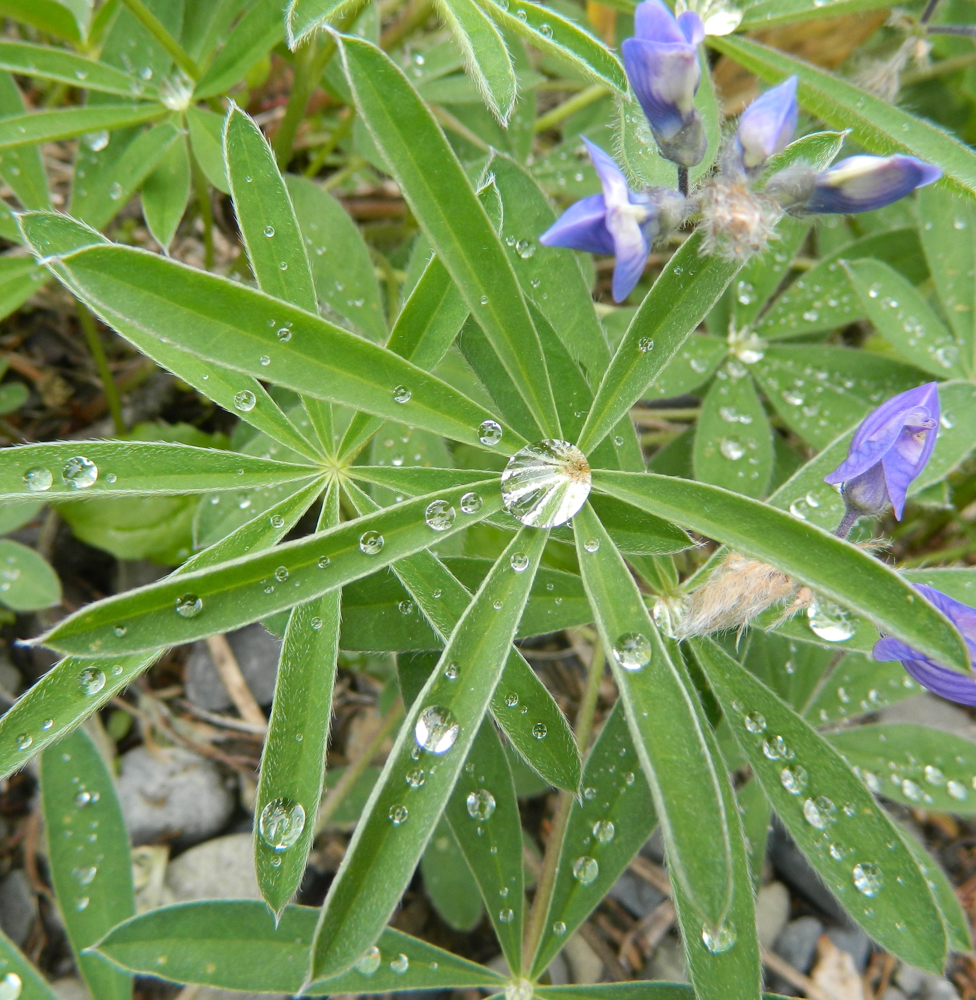

Plant chemistryPlants use chemical methods of responding to external stresses that other organisms may respond to with movement. To enable these chemical responses, plants have complex metabolic networks that generate a massive diversity of chemical compounds, many of which are not found elsewhere (Figure 1). These chemicals and the macrostructures they create are absolutely critical to human life; they provide us with food, fuel, and medicine. Currently, more than 15,000 species of plants are currently used by humans for medicine, more than 10,000 for materials, and 5,000 for food1. Known and unknown plant species still contain new molecules that can cure diseases, contribute to better nutrition, teach us how to make new or better materials, and provide us with the genetic tools to improve existing biotechnologies. |
 |
Figure 1: Overview of plant metabolism. Special emphasis is placed on the large classes of plant secondary metabolites: alkaloids, phenylpropanoids, and isoprenoids. Chloroplast and mitochondrial processes are included to demonstrate where the carbon, oxygen, and energy come from that are used to make these compounds. |
|  | Plant specialty lipid diversity and biosynthesisPlant lipid compounds are one subset of plant chemicals. They are made principally of carbon, hydrogen, and oxygen, and are important industrial products, medicines, and foods. For example, trees produce natural rubber that we use as a polymer, foxglove plants produce a class of natural lipid compounds called digitalins used to treat heart disorders, and plants oils are ubiquitous in cooking. Since plant lipid compounds are all crucial to our daily lives, we need a fundamental understanding of how and why they are made, and which plants make them. By answering these questions, scientists are building a base of knowledge which can be used in the future to solve problems in all the areas in which these compounds are important and lay groudwork for developing new technologies that take advantage of plant lipid compounds. One of the goals of my research is to contribute to our understanding of how these compounds and made and what their properties are. |
| Figure 2: Chemical structures of some specialty plant lipids. Simple lipids can be modified into a wide range of chemical structures. Here are some examples compounds I have worked with. |
The plant cuticleOne class of plant lipids are those that plants create to coat their large surface areas and protect themselves from getting dried out by the sun. These coatings are often superhydrophobic, causing water droplets to bead and roll off the plant, cleaning the surface as they do so (Figure 3). Plant epidermal cells coat themselves in cuin, a polyester matrix that serves as a molecular scaffold, and cuticular waxes, a mixture of very-long-chain lipids that accumulates within and on top of the cutin to seal the surface. In this way, the cuticle is a composite material. Both the cutin and wax components of cuticular wax are essential to plant life on dry land and are therefore crucial areas of research as the climates that our crops must tolerate become increasingly variable. Different plant species seal their cuticule surfaces with different mixtures of wax compounds; some use fatty aldehydes, while others rely on alkanes or esters, and still others cover themselves with crystals made of secondary alcohols, ketones, or diketones. Why do plants do this? Presumably these modifications allow each plant's cuticle to perform optimally in local environmental conditions. One of the goals of my reaseach is to contributing to our understanding of how cuticular waxes affect the properties of the plant cuticle. |
 |
| Figure 3: The lotus effect in action. Water beads up on this plant (Lupinus sericeus_ due to the specialty lipids present on their surfaces. Photo taken in Manning Park, BC. |
1. Royal Botanic Gardens at Kew, State of the World's Plants 2016, http://science.kew.org/strategic-output/state-worlds-plants]↩
{kind=link}